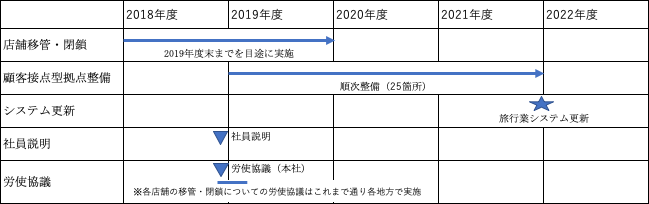

「駅」の変革と新たな顧客接点創り（旅行業部門の今後の方向性）
「『駅』の変革と新たな顧客接点創り（旅行業部門の今後の方向性）」について提案を受ける
中央本部は3月6日、経営側より「『駅』の変革と新たな顧客接点創り（旅行業部門の今後の方向性）」の提案を団体交渉で受けました。
提案の趣旨及び提案内容は以下の通りです。
「目的」（要旨）
加速する経営環境の変化の中で「駅」の仕事を変革し、社員一人ひとりが駅、お客さま、地域に価値を提供できる仕組みに変革していくことが重要である。
今後「駅」の変革の一環として「駅」を「商品販売の拠点」からお客さまや地域の方々の「集いの場」へと変革していく。
そのために「旅行業部門の今後の方向性（観光流動創造イノベーション）」として、店舗の役割についてはお客さまの面的なフォローにシフトしていく。
提案内容
実施内容
- 「旅行業部門の今後の方向性」として進めてきているびゅうプラザの店舗移管・閉鎖を引き続き進め、移管店舗のうち、当社管内をご利用になるお客さまを面的にサポートする拠点として顧客接点型拠点を順次整備していく。
- 顧客接点型拠点の運営者はこれまでのびゅうプラザの運営実績や顧客対応ノウハウを持つ（株）びゅうトラベルサービス（VTS）を基本とする。
- 旅行業に従事するグリーンスタッフについては、店舗移管後も業務に従事する選択肢として「VTSへの出向」「支社間異動」ならびに「駅業務への転換」（駅業務契約社員を配置していない支社）を提示できるよう準備を行っていく。
スケジュール

提案のポイント
1、店舗移管・閉鎖→2019年度末までを目途に実施
・びゅう商品の販売をWebに特化し、2022年4月以降、販売店としての「びゅうプラザ」全ての営業を終了する。
・各店舗の具体的なスケジュール等は、各地方で示していく。
2、顧客接点型拠点整備→2019年度～2021年度末までに順次整備（25箇所予定）
・顧客接点型拠点を設置し、インバウンドや不慣れなお客さまのケアを行う。
3、駅出改札業務への影響
・びゅうプラザの営業終了により、一部業務（団券等）を駅窓口が担当することはあり得る。
「『駅』の変革と新たな顧客接点創り（旅行業部門の今後の方向性）」について申し入れる。

中央本部は、4月3日に申第18号「『駅』の変革と新たな顧客接点創り（旅行業部門の今後の方向性）に関する申し入れ」を経営側に提出しました。
経営側より提案された「『駅』の変革と新たな顧客接点創り（旅行業部門の今後の方向性）」では、実施案としてこれまで商品販売の場であった「びゅうプラザ」の店舗移管と閉鎖を進め、お客さまを面的にサポートする「顧客接点型拠点」を順次整備していくことなどが示されています。
中央本部は営業協議会と連携し、旅行業部門と駅で働く組合員や社員からの「自分の職場が具体的にどのように変化していくのか」「業務内容はどのように変化するのか」など、不安や疑問の声を集約し、社員が安心して働ける職場と旅行業部門の将来をつくるため、申し入れを経営側に提出しました。
申第18号団体交渉「お客さま視点」と「働く者の視点」で団体交渉を行う

中央本部は、4月16日申第18号「『駅』の変革と新たな顧客接点創り（旅行業部門の今後の方向性）に関する申し入れ」の団体交渉に臨みました。
団体交渉での主な経営側の回答（要旨）と組合側の主張は以下の通りです。
旅行業部門におけるおける経営側の主な回答
- これまで培ってきたノウハウを生かせる場はある。
- 社員の努力により東日本東日本エリアの観光流動創造に成果を上げてきた。これまで携わってきた社員に感謝している。
- 旅行業界は変化しているが、根本的な考えは変わらない。
- 対面販売については、旅行手配の代行を行ってきた。しかし、ネット販売の増加により代行の手間が減少してきている。
- お客さまとの接点を持てる場を拠点とした。お客さまのフォローについては、すべての拠点で可能である。
- ネット販売の促進およびフォローをしていく。
- 端末扱いや帳票整理などのスキルが生かせるかは分からない。
- 顧客接点側拠点での「ジャパンレールパス」の引き換えについては検討中。
駅業務における経営側の主な回答

- 窓口でやらなければならなかった業務はネットに移行していく。
- 紙ベースの割引証（学割、ジパング、株主優待など）は、無くす方向で検討している。
- 駅総体で人員の配置は考えていく。コンパクト化する業務もあるため、必ずしも出札業務の負担になるとは考えていない 。
- ｅチケット化により、お客さま自身での切符の購入、変更、払い戻しが可能となるが、サポートセンターの体制は考えていきたい。
- 人でなければできない仕事がモチベーションとなる。社員の配置は考えていく。
- 旅行業商品の「社員割引」「大人の休日割引」は、今後も続けていく予定である。
- 現在の「ダイナミックレールパック」の購入フォームが分かりづらいため、入力 画面や入力の方法については変更していく予定である。
組合側の主張
- びゅうプラザの拠点化を、地方と首都圏を一律に考えるべきではない 。
- 経営側の回答に「検討中」との事柄が多く、提案をした段階で具体的にするべきだ。
- 駅業務総体として輸送混乱時の対応を考えていかなければならない。さらに、技術継承や担い手をつくっていくための人材の教育も必要である。
- 組合側は「働きがい」「働きやすさ」を考える。経営側は「利益を上げていくこと」を考えるが、お客さま視点に立って考えることが大切である。
- 「Webに特化する」としているが、 Webを使って購入されるお客さまもいれば、Webを使わないで購入されるお客さまの両方の視点で考えていくべきだ。
「申し入れ内容」と「経営側書面回答」
具体的な申し入れ項目と経営側の書面回答は以下のとおりです。
- １．ＪＲ東日本発足以降の旅行業部門の成果と課題及びこの間、旅行業に携わってきた社員の評価について明らかにすること。
- 【回答】旅行業については、社員の努力等により東日本エリアの観光流動創造に成果をあげてきたと認識している。引き続き環境の変化に柔軟に対応し、持続的に観光流動を創造していく考えである。
- ２．NF2008今後の駅のあり方の施策の一つに「駅にびゅうプラザとみどりの窓口の機能統合」した新販売拠点を設置してきた以降、今日までの評価について明らかにすること。
- 【回答】ハイカウンターとローカウンターを併設することで、お客さまサービスの向上につなげてきたと認識している。
- ３．拠点を25店舗とした理由及びVTSへ移管した店舗、廃止する店舗を拠点としない理由を明らかにすること。
- 【回答】顧客接点型拠点は、お客さまを面的にフォローすることを目的として、フォローの必要性が高い訪日旅行者や大人の休日倶楽部会員等のご利用状況等を総合的に勘案して整備していく。
なお、今後もお客さまのご利用状況等を勘案しながら必要な見直しは行っていく。 - ４．面的なサポートとは具体的に何を指すのか明らかにすること。また、現行との作業の相違点について明らかにすること。
- 【回答】びゅうプラザは、商品販売の拠点からお客さまの面的なサポートに業務内容をシフトしていく。顧客接点型拠点においては、発地だけでなく着地でもお客さまをサポートしていく。
- ５．地方の拠点は着地となるが、なぜ旅行業商品を発売しないとするのか。また、着地店舗で必要な業務知識をどのようなものと捉えているかその考えを明らかにすること。
- 【回答】加速する経営環境の変化に対応するため、オンライン販売の強化を進めるとともに、顧客接点型拠点を整備し、店舗の役割をお客さまの面的フォローにシフトしていくことにより、引き続き東日本エリアの観光流動を創造していく考えである。
なお、顧客接点型拠点で対応する業務については、今後、店舗を運営する㈱びゅうトラベルサービスと連携して検討を行っていく。 - ６．駅業務の定型的な業務とは何か。また、商品販売の拠点から集いの場に変更するとは主に何を指すのか明らかにすること。
- 【回答】eチケットに代表されるIT化やシステム化により縮小可能な業務を定型的な業務と位置付けている。きっぷや商品の販売をオンラインにシフトしていくことで、駅の役割は、駅を楽しく・魅力的にすることや、目的地を創ることに変わっていくと考えている。
- ７．各地方のWeb販売の伸び率、割合を支社毎に明らかにすること。
- 【回答】オンライン販売実績は地方ごとの計上を行っていない。
- ８．チケッティング改革とは何を指すのか。また、現状・将来の改革について進捗状況・展望について明らかにすること。
- 【回答】在来線特急列車の「えきねっとチケットレスサービス」や「タッチでGo！新幹線」等により、お客さまの購入・乗車スタイルを変革していく。
- ９．切符の性質上、購入して終わりではなく、その後の対応は駅の出改札社員が対応しているが、今後Web購入が増えるにつれ、どのようなことが予想されるか明らかにすること。
- 【回答】eチケット化により、お客さま自身によるきっぷの購入・変更・払戻しが可能になると想定している。
- 10．びゅうプラザ店舗が廃止された後の駅において、業務量が増えることが予想されるが、それに伴う要員の増減についての考え方について明らかにすること。
- 【回答】業務の運営に必要な要員は確保していく考えである。
- 11．現在の営業・旅行業部門の社員構成を明らかにするとともに、今後の社員構成について、どのように構築していくのか必要な要員の増減を含め明らかにすること。
- 【回答】業務の運営に必要な要員は確保していく考えである。
- 12．旅行業商品の社員割引、大人の休日倶楽部会員割引についての今後の取り扱い方、考えについて明らかにすること。
- 【回答】各種割引施策等の取り扱いについては、利用状況や環境の変化等に応じて引き続き検討していく。
- 13．現在の旅行業システムと新たに更新するシステムの違いを具体的に明らかにすること。
- 【回答】オンライン購入の利便性向上につながるシステム開発を進めるとともに、将来の環境変化への対応力を向上させるため外部システムと連携しやすい仕組みづくりを検討している。
以 上
「第二次申し入れ」を提出
中央本部は、2019年8月10日、申第1号「『駅』の変革と新たな顧客接点創り（旅行業部門の今後の方向性）に関する第二次申し入れ」を経営側に提出しました。
第一次申し入れの団体交渉で経営側からは、
- 「オンライン販売の強化を進め、びゅうプラザは商品販売の拠点からお客さまの面的なサポートに業務内容をシフトしていく」
- 「お客さまが立ち寄る可能性の高い駅25箇所を顧客接点型拠点とし、お客さまのご利用状況等を勘案しながら必要な見直しは行っていく」
- 「駅業務の定型的な業務をIT化やシステム化により縮小していく」
などの考えが示されました。
しかし、顧客接点型拠点が整備されることで「ジャパンレールパスの引き換え」や「ジパング倶楽部会員の対応」など、検討中としている内容が多くあります。
また、顧客接点型拠点化したことによる駅の出改札業務への負担についても、営業職場の組合員、社員から不安や疑問の声が寄せられています。
さらに、これまで「びゅうプラザ」をご利用いただいているお客さまから、「びゅうプラザ」の閉店について「ネット販売では不安」「旅行相談ができなくなり寂しい」などのご意見も寄せられています。
以上の観点から中央本部は、「第二次申し入れ」を提出しました。
「第二次申し入れ」団体交渉を行うNEW
2019年8月23日、中央本部は申第1号「『駅』の変革と新たな顧客接点創り（旅行業部門の今後の方向性）に関する第二次申し入れ」の団体交渉を開催しました。
申し入れ項目と書面回答
- １．会社発足来の旅行業部門における成果と課題を明らかにすること。
- 【回答】旅行業部門については、東日本エリアの観光流動創造に成果をあげてきたと認識している。引き続き環境の変化に柔軟に対応し、持続的に観光流動を創造していく考えである。
- ２．旅行業部門に働く社員が培ったスキルの活用方について経営側の考え方を明らかにすること。
- 【回答】観光流動を創造する業務等、これまで培った経験を活かし、引き続き活躍してほしいと考えている。
- ３．顧客接点型拠点の業務内容を具体的に明らかにすること。
- 【回答】 東日本エリアをご旅行されるお客さまを面的にフォローすることで、安心してご旅行をお楽しみいただくとともに、観光流動を創造するための情報発信や、各種ご相談窓口の機能等を持つ拠点として整備する。なお、顧客接点型拠点で対応する業務や規模については、今後、店舗を運営する(株)びゅうトラベルサービスと連携して検討を行っていく。
- ４．ネット購入を望まないお客さまに対する販売体制および対応を明らかにすること。
- 【回答】 顧客接点型拠点においてオンライン購入をお手伝いするサービスや、コールセンターの強化等を検討している。
- ５．駅区所の定型業務の省力化に向けた今後の計画と、現在の進捗状況について明らかにすること。
- 【回答】eチケットに代表されるIT化やシステム化により縮小可能な業務を定型的な業務と位置付けており、「タッチでGo!新幹線」の導入や、案内AIロボット・デジタルサイネージの試験導入等の取組みを行っている。
- ６．次期えきねっとシステムの具体的な進捗状況を明らかにすること。
- 【回答】2021年春のサービス開始に向けてシステム検討を進めている。
- ７．アシストマルスの導入計画について明らかにすること。
- 【回答】お客さまのご利用実態等を総合的に勘案し、決定していく。
- ８．昨年度実績で営業職場（駅営業部門・旅行業部門ごと）における育児・介護勤務Aおよび育児・介護勤務B適用社員数を明らかにすること。
- 【回答】現在、営業職場において育児介護勤務を適用している社員は一定数おり、年々増加している。
以 上